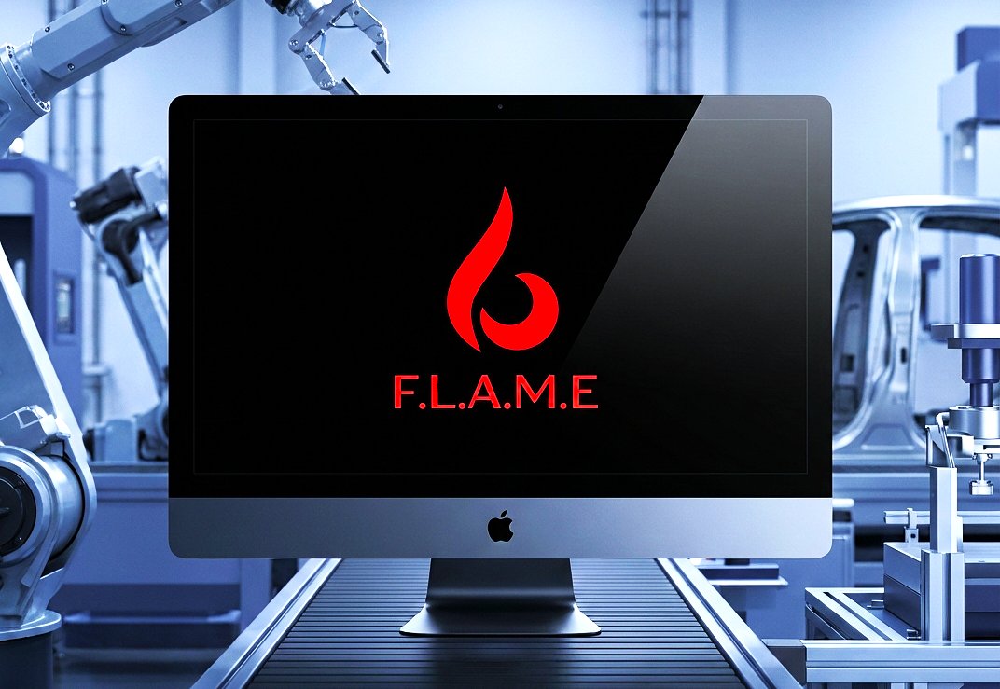
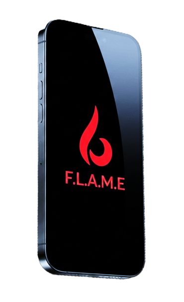
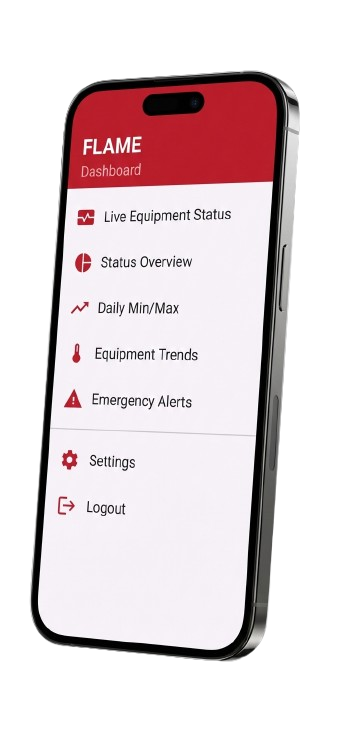

Dreamt. Designed. Delivered.
VERSION
TRACKING
TRACKING
VISUAL
UPDATES
UPDATES
CATEGORIZED
CHANGES
CHANGES
RELEASE
METADATA
METADATA
FEATURE
SHOWCASE
SHOWCASE
TRUSTED BY
CLIENTS
CLIENTS
Nevark's Hall of Creations
v5.0.1
Proprietary work. Publicly showcased.
v5.0.1
August 30, 2025
F.L.A.M.E : Factory Live Analytics & Monitoring Engine
A production-grade industrial level AI Monitoring system designed for real-time analytics and predictive maintenance of sensor-based equipments in an automotive manufacturing environment.
The
Problem
The Challenge: Invisible Degradation
Is your critical equipments reaching failure state without warning,
often
relying on manual checks
and delayed feedback that leads to unexpected downtime, compromising
quality
on the production line?
Don't Worry, We Got You!
Our Solution
Predictive Intelligence Engine: At the Edge
We engineered a machine-learning driven monitoring system that continuously analyzes live data to forecast equipment life, detect early anomalies, and trigger maintenance actions before failures occur.
Pinch of
Salt
The Differentiator: Real-Time Industrial Visibility
Unlike traditional dashboards, our solution delivers an animated, spatially mapped overview, translating raw sensor signals into intuitive visual insights that operators can act on instantly.
v1.2.0
November 30, 2025
F.L.A.M.E : Mobile App
Real-Time Industrial Visibility, From the Industrial Floor to the Palm of Your Hand


The
Problem
Locked Doors: Need Keys
Factory intelligence often remains locked to control rooms and desktops.
Maintenance engineers, supervisors, and leadership lacked real-time
mobile
access to weld health, alerts, and system status, thus slowing response
times and
decision-making during critical events.
Yes we thought about all the problems!
Our Solution
God's Eye: Monitor from Anywhere
Nevark developed the FLAME Mobile Companion App, a real-time mobile extension of the F.L.A.M.E ecosystem. Using WebSocket-based live data streaming, the app mirrors the industrial plant's conditions instantly and delivering alerts, equipment status, and anomaly notifications directly to your handheld devices.
Pinch of
Salt
Live Operations: Zero Latency
FLAME Mobile dissolves the boundary between physical operations and digital awareness. It converts live machine intelligence into immediate clarity, empowering faster intervention, sharper decisions, and uninterrupted oversight wherever the operation demands attention.
v1.0.0
December 10, 2025
The Agricultural Revolution
Reimagining Agriculture Through Intelligent Automation, Robotics, and Unified Ecosystems that augments alongside the farmers as their aid.
.png)
The
Problem
Lost Crops: Society Starves
Agriculture today faces fragmented tooling, rising labor dependency, and
disconnected supply chains.
Farmers rely on multiple machines for sowing, irrigation, harvesting,
and reaping—while still lacking access to unified logistics, storage,
and
distribution ecosystems.
Don't Worry, We Got You!
Our Solution
Connected: An Entire Ecosystem
Nevark envisioned a multi-functional agricultural robot designed to operate across the entire farming lifecycle. A single intelligent platform performs sowing, irrigation, harvesting, and reaping, while remaining connected to a centralized digital console that links farmers, equipment vendors, cold-storage facilities, and food distributors under one managed ecosystem.
Pinch of
Salt
Unity in Farming: Growth of Nation
Our vision goes beyond robotics - It introduces agriculture as a connected system. By combining physical automation with a centralized coordination platform, Nevark bridges the gap between farm operations and market logistics—bringing intelligence, scalability, and sustainability together under one unified vision.
® 2026 Nevark Technologies. All Rights
Reserved.
All project concepts, designs, and implementations
are proprietary and sole property of Nevark Technologies LLP.
Last updated: January 26, 2026
©
NEVARK